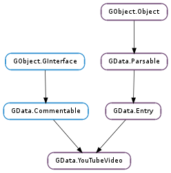

| static | get_video_id_from_uri(video_uri) |
| static | new(id) |
| get_access_control(action) | |
| get_aspect_ratio() | |
| get_category() | |
| get_coordinates() | |
| get_credit() | |
| get_description() | |
| get_duration() | |
| get_favorite_count() | |
| get_keywords() | |
| get_location() | |
| get_media_rating(rating_type) | |
| get_player_uri() | |
| get_rating() | |
| get_recorded() | |
| get_state() | |
| get_thumbnails() | |
| get_uploaded() | |
| get_video_id() | |
| get_view_count() | |
| is_draft() | |
| is_private() | |
| is_restricted_in_country(country) | |
| look_up_content(type) | |
| set_access_control(action, permission) | |
| set_aspect_ratio(aspect_ratio) | |
| set_category(category) | |
| set_coordinates(latitude, longitude) | |
| set_description(description) | |
| set_is_draft(is_draft) | |
| set_is_private(is_private) | |
| set_keywords(keywords) | |
| set_location(location) | |
| set_recorded(recorded) |
| Name | Type | Flags | Description |
|---|---|---|---|
| aspect-ratio | str | r/w | The aspect ratio of the video. |
| average-rating | float | r | The average rating of the video. |
| category | GData.MediaCategory | r/w | Specifies a genre or developer tag that describes the video. |
| credit | GData.YouTubeCredit | r | Identifies the owner of the video. |
| description | str | r/w | A summary or description of the video. |
| duration | int | r | The duration of the video in seconds. |
| favorite-count | int | r | The number of users who have added the video to their favorites. |
| is-draft | bool | r/w | Indicates whether the video is in draft, or unpublished, status. |
| is-private | bool | r/w | Indicates whether the video is private. |
| keywords | list | r/w | A None-terminated array of words associated with the video. |
| latitude | float | r/w | The location as a latitude coordinate associated with this video. |
| location | str | r/w | Descriptive text about the location where the video was taken. |
| longitude | float | r/w | The location as a longitude coordinate associated with this video. |
| max-rating | int | r | The maximum allowed rating for the video. |
| min-rating | int | r | The minimum allowed rating for the video. |
| player-uri | str | r | A URI for a browser-based media player for the full-length video. |
| rating-count | int | r | The number of times the video has been rated. |
| recorded | int | r/w | Specifies the time the video was originally recorded. |
| state | GData.YouTubeState | r | Information describing the state of the video. |
| uploaded | int | r | Specifies the time the video was originally uploaded to YouTube. |
| video-id | str | r | Specifies a unique ID which YouTube uses to identify the video. |
| view-count | int | r | The number of times the video has been viewed. |
None
| Name | Type | Access |
|---|---|---|
| parent | GData.Entry | r |
Bases: GData.Entry, GData.Commentable
All the fields in the GData.YouTubeVideo structure are private and should never be accessed directly.
| Parameters: | video_uri (str) – a YouTube video player URI |
|---|---|
| Returns: | the video ID, or None ; free with GLib.free () |
| Return type: | str |
Extracts a video ID from a YouTube video player URI. The video ID is in the same form as returned by GData.YouTubeVideo.get_video_id (), and the video_uri should be in the same form as returned by GData.YouTubeVideo.get_player_uri ().
The function will validate whether the URI actually points to a hostname containing youtube (e.g. youtube.com), and will return None if it doesn’t.
For example:
video_id = gdata_youtube_video_get_video_id_from_uri ("http://www.youtube.com/watch?v=BH_vwsyCrTc&feature=featured");
g_message ("Video ID: %s", video_id); /* Should print: BH_vwsyCrTc */
g_free (video_id);
| Parameters: | id (str or None) – the video’s ID, or None |
|---|---|
| Returns: | a new GData.YouTubeVideo ; unref with GObject.Object.unref () |
| Return type: | GData.YouTubeVideo |
Creates a new GData.YouTubeVideo with the given ID and default properties.
| Parameters: | action (str) – the action whose permission should be returned |
|---|---|
| Returns: | the permission associated with action, or GData.YouTubePermission.DENIED |
| Return type: | GData.YouTubePermission |
Gets the permission associated with the given action on the GData.YouTubeVideo. If the given action doesn’t have a permission set on the video, GData.YouTubePermission.DENIED is returned.
| Returns: | the aspect ratio property, or None |
|---|---|
| Return type: | str |
Gets the GData.YouTubeVideo :aspect-ratio property.
| Returns: | a GData.MediaCategory giving the video’s single and mandatory category |
|---|---|
| Return type: | GData.MediaCategory |
Gets the GData.YouTubeVideo :category property.
| Return type: | latitude: float, longitude: float |
|---|
Gets the GData.YouTubeVideo :latitude and GData.YouTubeVideo :longitude properties, setting the out parameters to them. If either latitude or longitude is None, that parameter will not be set. If the coordinates are unset, latitude and longitude will be set to GObject.G_MAXDOUBLE.
| Returns: | a GData.MediaCredit giving information on whom to credit for the video, or None |
|---|---|
| Return type: | GData.YouTubeCredit |
Gets the GData.YouTubeVideo :credit property.
| Returns: | the video’s long text description, or None |
|---|---|
| Return type: | str |
Gets the GData.YouTubeVideo :description property.
| Returns: | the video duration in seconds, or 0 if unknown |
|---|---|
| Return type: | int |
Gets the GData.YouTubeVideo :duration property.
| Returns: | the number of users who have added the video to their favorites list |
|---|---|
| Return type: | int |
Gets the GData.YouTubeVideo :favorite-count property.
| Returns: | a None-terminated array of words associated with the video |
|---|---|
| Return type: | [str] |
Gets the GData.YouTubeVideo :keywords property.
| Returns: | a string describing the video’s location, or None |
|---|---|
| Return type: | str |
Gets the GData.YouTubeVideo :location property.
| Parameters: | rating_type (str) – the type of rating to retrieve |
|---|---|
| Returns: | the rating of the video for the given rating_type, or None if the video isn’t rated with that type (or the type is unknown) |
| Return type: | str |
Returns the rating of the given type for the video, if one exists. For example, this could be a film rating awarded by the MPAA; or a simple rating specifying whether the video contains adult content.
The valid values for rating_type are: GData.YOUTUBE_RATING_TYPE_SIMPLE, GData.YOUTUBE_RATING_TYPE_MPAA and GData.YOUTUBE_RATING_TYPE_V_CHIP. Further values may be added in future; if an unknown rating type is passed to the function, None will be returned.
The possible return values depend on what’s passed to rating_type. Valid values for each rating type are listed in the documentation for the rating types.
| Returns: | a URI where the video is playable in a web browser, or None |
|---|---|
| Return type: | str |
Gets the GData.YouTubeVideo :player-uri property.
| Return type: | min: int, max: int, count: int, average: float |
|---|
Gets various properties of the ratings on the video.
| Returns: | the UNIX timestamp for the time the video was recorded, or -1 |
|---|---|
| Return type: | int |
Gets the GData.YouTubeVideo :recorded property. If the property is unset, -1 will be returned.
| Returns: | a GData.YouTubeState showing the state of the video, or None |
|---|---|
| Return type: | GData.YouTubeState |
Gets the GData.YouTubeVideo :state property.
For more information, see the online documentation.
| Returns: | a GLib.List of GData.MediaThumbnail s, or None |
|---|---|
| Return type: | [GData.MediaThumbnail] |
Gets a list of the thumbnails available for the video.
| Returns: | the UNIX timestamp for the time the video was uploaded, or -1 |
|---|---|
| Return type: | int |
Gets the GData.YouTubeVideo :uploaded property. If the property is unset, -1 will be returned.
| Returns: | the video’s unique and permanent ID |
|---|---|
| Return type: | str |
Gets the GData.YouTubeVideo :video-id property.
| Returns: | the number of times the video has been viewed |
|---|---|
| Return type: | int |
Gets the GData.YouTubeVideo :view-count property.
| Returns: | True if the video is a draft, False otherwise |
|---|---|
| Return type: | bool |
Gets the GData.YouTubeVideo :is-draft property.
| Returns: | True if the video is private, False otherwise |
|---|---|
| Return type: | bool |
Gets the GData.YouTubeVideo :is-private property.
| Parameters: | country (str) – an ISO 3166 two-letter country code to check |
|---|---|
| Returns: | True if the video is restricted in country, False otherwise |
| Return type: | bool |
Checks whether viewing of the video is restricted in country, either by its content rating, or by the request of the producer. The return value from this function is purely informational, and no obligation is assumed.
| Parameters: | type (str) – the MIME type of the content desired |
|---|---|
| Returns: | a GData.YouTubeContent matching type, or None |
| Return type: | GData.YouTubeContent |
Looks up a GData.YouTubeContent from the video with the given MIME type. The video’s list of contents is a list of URIs to various formats of the video itself, such as its SWF URI or RTSP stream.
| Parameters: |
|
|---|
Sets the permission associated with action on the GData.YouTubeVideo, allowing restriction or derestriction of various operations on YouTube videos.
Note that only GData.YOUTUBE_ACTION_RATE and GData.YOUTUBE_ACTION_COMMENT actions can have the GData.YouTubePermission.MODERATED permission.
| Parameters: | aspect_ratio (str or None) – the aspect ratio property, or None |
|---|
Sets the GData.YouTubeVideo :aspect-ratio property to specify the video’s aspect ratio. If aspect_ratio is None, the property will be unset.
| Parameters: | category (GData.MediaCategory) – a new GData.MediaCategory |
|---|
Sets the GData.YouTubeVideo :category property to the new category, category, and increments its reference count.
category must not be None. For more information, see the online documentation.
| Parameters: |
|
|---|
Sets the GData.YouTubeVideo :latitude and GData.YouTubeVideo :longitude properties to latitude and longitude respectively.
| Parameters: | description (str or None) – the video’s new description, or None |
|---|
Sets the GData.YouTubeVideo :description property to the new description, description.
Set description to None to unset the video’s description.
| Parameters: | is_draft (bool) – whether the video is a draft |
|---|
Sets the GData.YouTubeVideo :is-draft property to decide whether the video is a draft.
| Parameters: | is_private (bool) – whether the video is private |
|---|
Sets the GData.YouTubeVideo :is-private property to decide whether the video is publicly viewable.
| Parameters: | keywords ([str]) – a new None-terminated array of keywords |
|---|
Sets the GData.YouTubeVideo :keywords property to the new keyword list, keywords.
keywords must not be None. For more information, see the online documentation.
| Parameters: | location (str or None) – a new location, or None |
|---|
Sets the GData.YouTubeVideo :location property to the new location string, location.
Set location to None to unset the property in the video.
| Parameters: | recorded (int) – the video’s new recorded time, or -1 |
|---|
Sets the GData.YouTubeVideo :recorded property to the new recorded time, recorded.
Set recorded to -1 to unset the video’s recorded time.